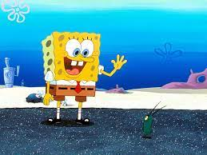

About Bikini Bottom
Bikini Bottom is the vibrant underwear city where SpongeBob SquarePants and his friends live. From the Krysty Krab to Jellyfish
fields. There's always something fun happening here!
Top Attractions
- Krusty Krab: Home of the famous KrabbY Patty. Don't forget to try one!
- Jellyfish Fields: Perfect for jellyfish catching and pionists.
- Goo Lagoon: A beautiful lagoon for swimming and sunbathing
- Sandy's Treedome: Vist Sandy Cheeks'treedome for a taste of Texas underwater
Travel Tips
- Bring your jellyfish net for a fun day at jellyfish fields.
- Don't forget to try a Krabby Patty at the Krusty Krab.
- Be careful around Plankton's Chum Bucket--it's not tasty as it sounds!
